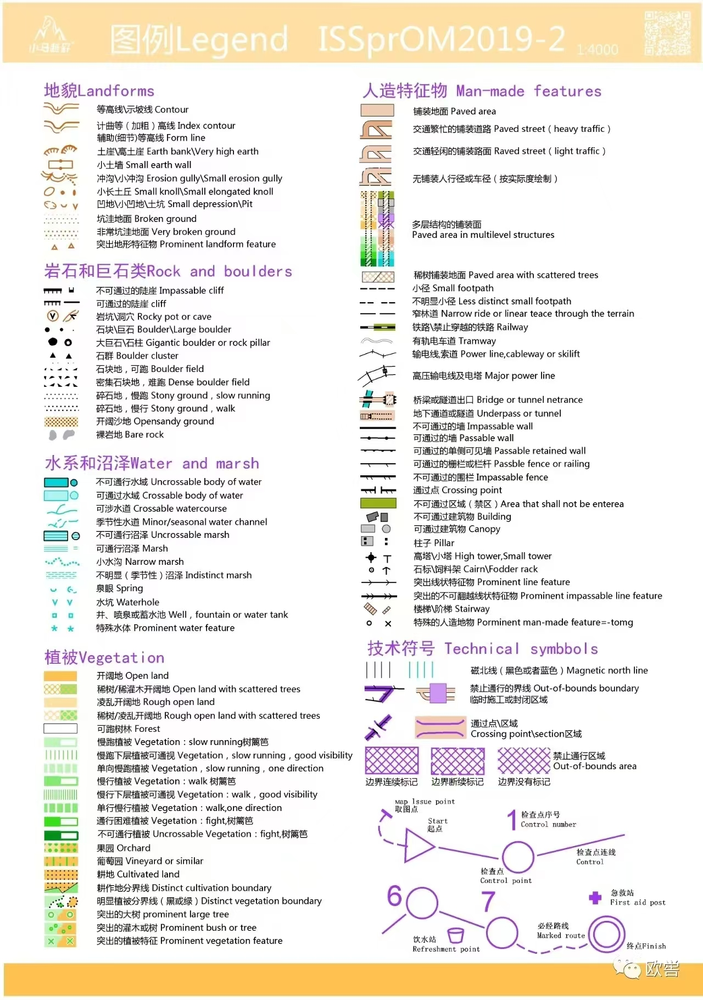
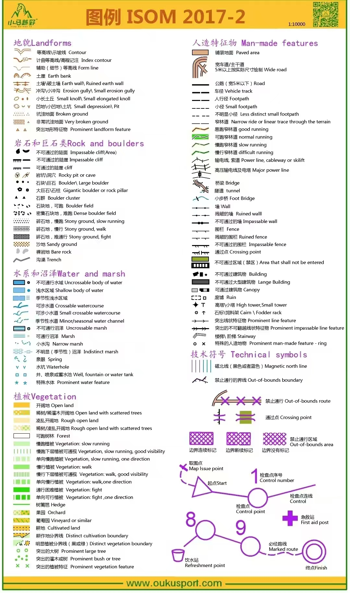
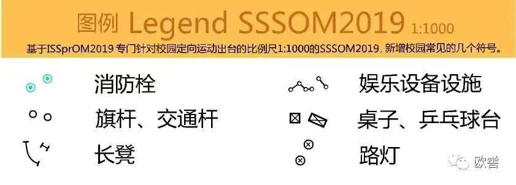
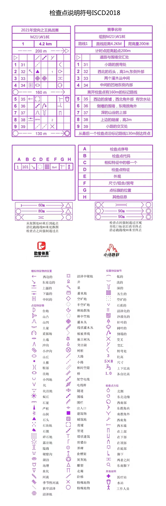
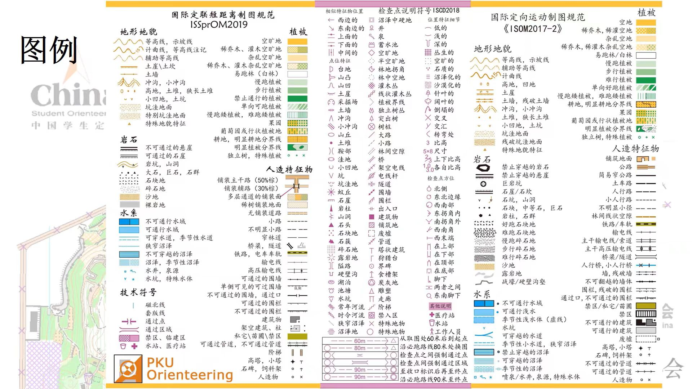

短距离图例 · ISSprOM2019-2

更新时间：2026.9.6
作者：中山大学定向队
这份指南给想要体验定向的你：先看懂地图，再通过课程与跑图录像逐步练习。
不必一次关注所有账号，先收藏这份图指南，方便日后有需求时查阅。
校园、公园短距离先查短距离图例；山地、中长距离查中长距离图例。检查点说明用于判断点标具体位置，不要与地图符号混为一套。
图例保留原图版本。ISCD2018已被IOF 2024版取代；本图用于基础识别，比赛按所采用的规则、地图图例和补充说明执行。
IOF检查点说明现行文件 · IOF检查点说明2024版PDF下载 · IOF制图规范
2024版变化提示：说明表应印黑色；新增铁路/有轨电车和翻面指示；部分符号含义扩展。原图保持原样，未改成新版。


是否使用以本场地图为准。



定位：协会官方。看赛事通知、参赛要求与规则信息；有疑问先查对应赛事正式文件。
定位：定向赛事整理；转载视频、路线记录与经验分享；适合作为复盘资源入口。
推荐文章：【定向信息汇总】赛事活动。
定位：知识科普、国外优质视频转载。适合学习
推荐文章：定向村落图怎么跑，技巧都在这里了！（下）。
定位：俱乐部 / 机构信息发布。中山大学定向队平时参加训练的俱乐部
推荐文章：【活动报名】2026小马越野第17场会员活动。
定位：进阶资料整理。规则解读、国外训练资料、地图与技术文章较多；更适合跑过几次图后查规则和技术细节。
中山大学定向队相关训练、招新、周报和集训记录！！！
推荐文章：2026秋季 | 暑期集训小记
定位：赛事复盘与回顾。早期广东高校巡回赛、南粤古驿道等比赛记录较多；现多为小谷围定向训练回顾
入门推荐。4分钟视频建立起对定向越野的基本印象。
入门推荐。四讲覆盖基础、地图、基本技术和比赛表现，短小、适合第一次训练前看。
系统课程。收录小鹿定向六章课程，按图例、检查点说明、读图、指北针、选路查阅。
定位：赛后复盘及国外定向视频搬运。
定位：个人实战录像与比赛记录，适合把地图判断和实际行进联系起来。
推荐视频：9.15肇庆“村落之王”定向挑战赛（成年男子组）。
定位：协会官方赛事资讯、赛事短片与活动集锦。
定位：比赛轨迹回顾、公园/山地第一视角和场地观察。
定位：广东、香港等地短距离和接力赛跑图录像，适合观察不同场地的路线选择。
推荐视频：定向越野中国杯太湖站M21接力赛第三棒。
定位：教练内容、训练营与专项训练记录，适合和队长一起了解训练方法。
定位：中山大学定向队王牌队员个人账号，含比赛录像复盘，适合回顾学习。
推荐视频：决战黄山鲁-小马越野清明训练【第一视角】
小谷围高校定向联盟：高校联合训练报名与活动回顾。
TempO Simulator：TrailO / TempO 在线训练平台，可做定点判读、旗号选择和计时训练。它更偏“看图判断点位”的技术训练，不是跑步路线复盘。服务器在境外；国内访问若页面打开慢或图片加载失败，可能需要代理。
Into the Wild：浏览器里的 3D 定向训练环境，使用 LiDAR 地形和真实定向地图来练习森林读图、路线选择、接力/多人训练。对电脑性能和网络加载要求比普通网页高；国内访问 3D 场景、地图资源时若卡顿，可能需要代理或较稳定的外网环境。
Livelox：赛后路线复盘和 GPS 轨迹比较平台，可上传手表/手机记录的轨迹，在赛事地图上回放、对比选路和分析分段。适合训练后和队友一起复盘“在哪里犹豫、绕路或出点”。大陆网络可先直接访问；若地图、轨迹或登录加载不稳定，可能需要代理。
Livelox使用教程：LiveLox定向越野轨迹回放教程（包含 Livelox Recorder 手机轨迹记录导入）：讲解用 Livelox 做轨迹回放、导入 GPX/手机记录，适合第一次复盘前看。
Control 官方使用指南 · App Store · Google Play
Control 是手机端赛后复盘 App，可把 GPS 轨迹叠到定向地图照片/图片上，做路线查看、分段、回放和对比。适合有地图照片和手表/手机轨迹的情况。部分高级分析功能属于 Total Control 订阅。
访问提示：Google Play 在大陆通常需要代理和 Google 账号；App Store 是否能直接下载取决于账号地区，若国区搜不到可从官网或非国区 App Store 链接确认。Control 官网也在境外，若打不开再考虑代理。
使用教程：手机定向越野神器-control
图例由队伍提供，保留原署名与标识。课程/视频仅提供入口，不搬运全文或视频。账号可能改名；失效时用“作者名＋作品名”查找。